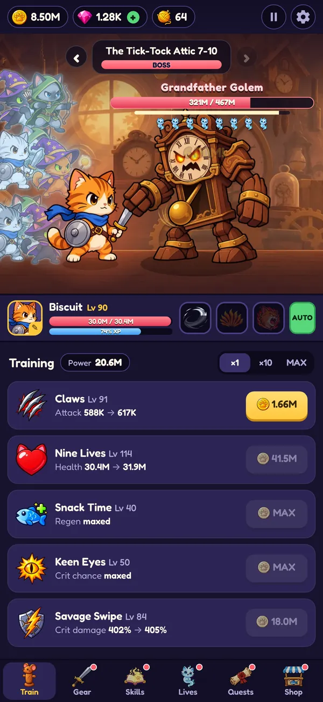
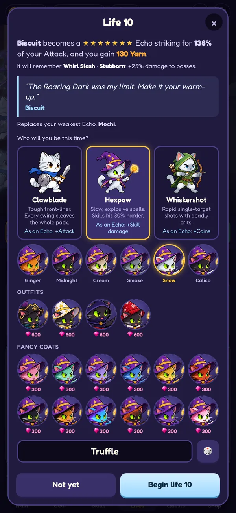
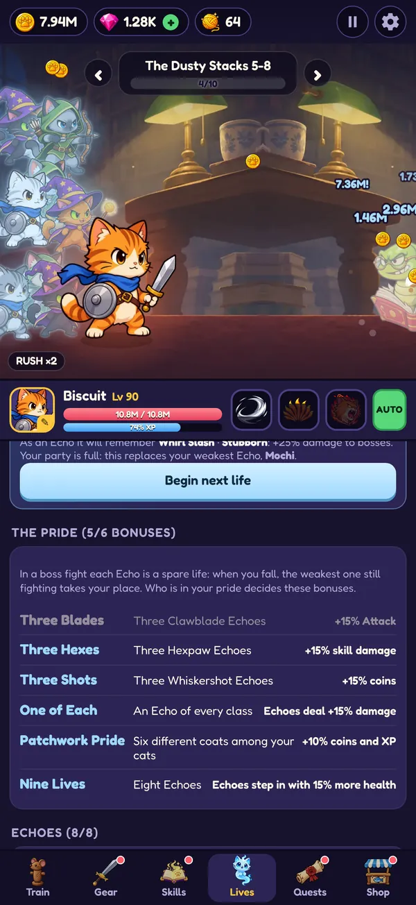
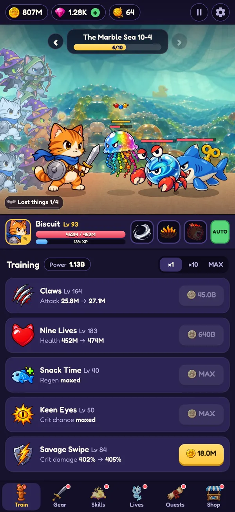
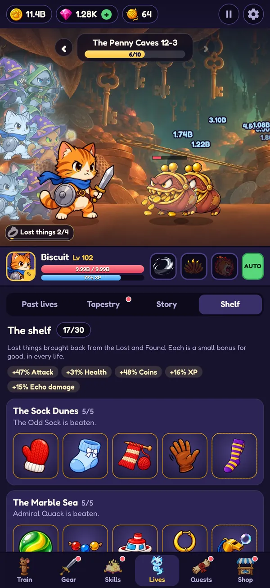
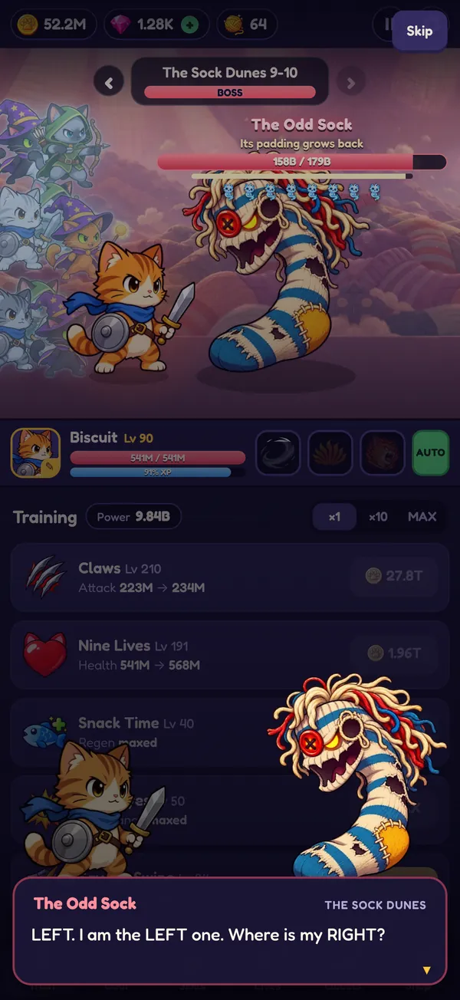

Pawst Lives
The idle RPG where your party is your own past lives.
A cat has nine lives. Yours all fight at once. When one life has gone as far as it can, you begin the next, and the cat you were comes back as an Echo: a ghost that fights at your side from then on.
Get it on the App Store: freeFor iPhone and iPad. No ads. No account. Plays offline.

Nine cats. One hero. All of them you.
When the lights go out, the house becomes a dungeon. The garden sprinkler is a hydra. The toaster is a dragon. And somewhere in the dark under the stairs, the vacuum cleaner is waiting.
Live a life
Play as a Clawblade, a Hexpaw or a Whiskershot. Your cat fights on its own while you train it, dress it in what it finds, and time its skills.
End it well
When a boss will not fall, begin your next life. The further the old one got, the stronger the Echo it leaves behind.
Fight beside your ghosts
Up to eight Echoes join you, each keeping the skill it trained highest. Fall to a boss and an Echo steps into your place: every one is a spare life.
What it looks like
Every picture here is the game as it runs on an iPhone. On an iPad it is the same game, filling the screen.






Idle when you want, hands-on when you don't
It plays itself when you are busy and rewards you when you are not.
A haunted house
Eight rooms from the Garden Gate to the Roaring Dark, each with its own monsters and boss. Can Crabs. Sock Goblins. A washing machine with tentacles.
Always something to upgrade
Train five stats, level three skills for each class, enhance four pieces of gear, and weave upgrades into the Tapestry that never reset.
Build a pride
Bonuses for three Echoes of a kind, one of every class, six different coats, or a full house of eight.
Naps, not chores
Step away and your cats nap. You come back to a little pocket money and a well-rested cat that earns double for a while.
Tap, time, or leave it
Pounce on an enemy, hold a skill for the right moment, or let it all run on auto.
Free things every day
Daily quests, lifetime feats and a daily gift, all paying gems you never have to buy.
Fair and quiet
Made by one person, who wanted a game that leaves you alone.
- No ads
- No account
- No tracking
- Plays offline
Nothing is collected about you: the game's privacy label on the App Store is Data Not Collected, and the privacy policy is one page. It is free, with six optional purchases (gems, and two one-time upgrades that last forever) and no subscriptions. Nothing in the game needs them, and nothing you buy is left to luck: there are no loot boxes.
iPad, five more languages, and no more luck in the Shop
- iPad. The whole game, filling the screen.
- Your save follows you. Kept in your own iCloud as well as on your device, so a new iPhone or an iPad finds your cats where you left them. Still no account.
- Spanish, Portuguese (Brazil), French, German and Japanese. The whole game, story included. It follows your device's language, and Settings has a Language card if you would rather play in another.
- No loot boxes. The Gear Chest is no longer a lucky dip: it shows you its four pieces of gear and you pick one.
- Reminders, if you want them. Off until you turn them on.
Questions
Is Pawst Lives free?
Yes. It is free to download and can be played to the end without paying. There are six optional in-app purchases: four packs of gems and two one-time upgrades that last forever. There are no subscriptions.
Does it have ads?
No. There are no ads of any kind, and there never have been.
Can I play offline?
Yes. The whole game plays with no connection. When you are online, daily rewards check the real date.
What is an idle RPG?
A role-playing game that keeps going on its own. In Pawst Lives your cats fight by themselves; you decide what to train, what to wear, when to use a skill, and when a life has gone far enough to begin the next.
Do I need an account? What does it collect?
No account and no sign-in, and the game collects nothing about you. See the privacy policy.
Is it on iPad or Android?
It runs on iPhone and iPad, and a save in your iCloud moves between them. There is no Android version.
What languages is it in?
English, Spanish, Portuguese (Brazil), French, German and Japanese. The game follows the language your device is set to, and Settings has a Language card to choose another.
Something is not working. Where do I get help?
The support page covers saves, purchases and getting past a boss, and has an address to write to.